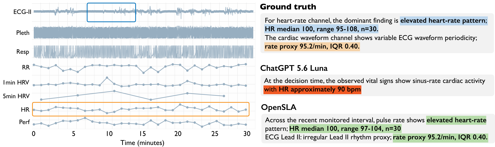
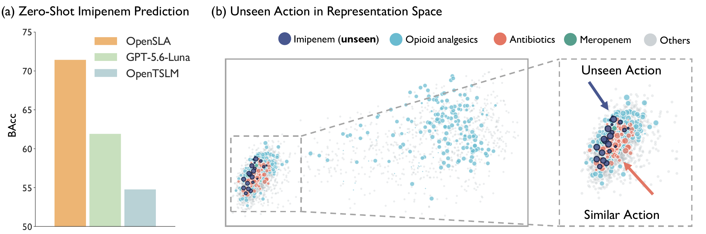
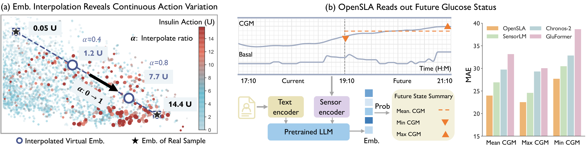
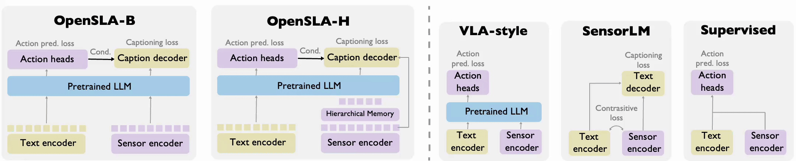
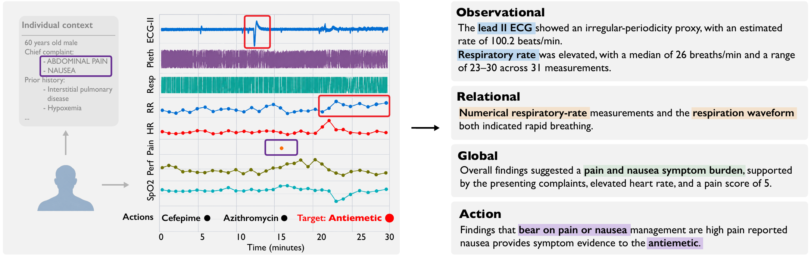

Clinical care
ECG, plethysmography, respiration, blood pressure, SpO₂, and heart rate, with clinical context. Actions span medications, procedures, and diagnostic tests.
MC-MEDMIMIC-IIIMIMIC-IV · external
Sensors matter not only for describing what is happening, but for informing what to do next.
Today’s sensor models recognize states or predict outcomes. The actions that follow are modeled separately, each with its own formulation and a closed label space — so there is no common way to relate sensor evidence, context, and the decisions they support.
Unlike fixed labels, language can express task intent, individual context, physiological state, and action semantics together. That lets very different sensor-action problems be written in one common form.
OpenSLA puts Sensor-Language-Action modeling into practice: a single model for hierarchical action prediction, sensor-state understanding, and action explanation, grounded in the underlying sensor evidence.
“Can sensor data, language, and action be modeled through a unified framework?”
The same model answers all three from one sensor window and the individual’s context.
67-year-old male · complaint: fever · prior history …
Multi-level action prediction
Sensor-state understanding
Action-evidence grounding
Rapid breathing provides context for the recorded nebulizer.
Example outputs shown in Fig. 1 of the paper, abbreviated. Traces are illustrative.
Six real-world cohorts, three healthcare settings, and comparisons against supervised models, time-series foundation models, sensor-language models, and multi-modal LLMs.
OpenSLA has the highest balanced accuracy for action necessity in all six cohorts, and for action category in five.
Balanced accuracy (%), test split; 50 is chance. Baseline = best of eight compared methods per cohort. From Tables 2–4.
Mean absolute error of quantities read from generated captions — lower is better. OpenSLA-H, Table 5.

With no extra regression head, OpenSLA’s captions give the most accurate physiological estimates among the compared methods. In this example it reports the heart-rate median and range and the ECG rate; the zero-shot LLM gives only an approximate heart rate.
Schematic — hover to explore, click for the measured embedding
Imipenem is absent from the supervised action targets. In OpenSLA’s representation space it sits next to the antibiotics it resembles — and with parameters frozen, OpenSLA-H reaches the highest balanced accuracy at telling it apart from no action.


Interpolating between two insulin actions retrieves real samples whose doses change monotonically along the path. And with the backbone frozen, simple ridge readouts recover glucose over the next two hours — information the model was never trained to predict.
What the ablations and transfer studies say about where the gains come from.
Training on action labels alone, VLA-style, is the weakest variant on every endpoint. On VitalDB, necessity AUROC rises from 54.1 to 74.9 with caption generation and action conditioning.
Adding action-evidence captions to the other three facets lifts necessity AUROC from 81.6 to 83.4 on MOVER and from 64.3 to 74.9 on VitalDB.
Dropping action conditioning or the fusion decoder still beats action-only training, but the full model is best on all four operating-room endpoints.
Compared with LLaVA-style adapters and Flamingo-style cross-attention, direct LoRA adaptation does best on most operating-room tasks.
Hierarchical Memory cuts sensor tokens 14.49× in clinical windows and 4.67× in the operating room, for 3.4× and 1.7× faster forward passes. Short CGM sequences see little runtime benefit.
On waveform-linked MIMIC-IV, with no further fine-tuning, both OpenSLA variants outperform the adapted sensor-language baselines on necessity and category balanced accuracy — 74.4 versus 69.3 for necessity.
A captioning pipeline for supervision, and a model trained jointly to predict actions and generate captions.
A four-facet pipeline turns each sensor window into language: what each channel shows, how channels relate, the individual’s context, and the evidence behind the recorded action.
Each channel passes through a frozen signal encoder. Hierarchical Memory then compresses the tokens across resolutions, keeping both sample-level meaning and fine-grained patterns.
A LoRA-adapted language model predicts necessity, category, and label. A gated fusion decoder writes the caption, conditioned on the predicted action and retrieved sensor evidence.


Sensor histories paired with individual context, structured actions, and evidence captions.
ECG, plethysmography, respiration, blood pressure, SpO₂, and heart rate, with clinical context. Actions span medications, procedures, and diagnostic tests.
MC-MEDMIMIC-IIIMIMIC-IV · externalDense perioperative waveforms and numerical measurements, aligned with the actions taken during surgery.
MOVERVitalDBContinuous glucose and basal-insulin histories from daily life. The action is insulin bolus delivery.
MetaboNetPEDAPLanguage in sensor intelligence is not only for describing observations. It can organize the knowledge that connects states to actions.
@misc{xu2026opensla,
title = {Sensor-Language-Action Models},
author = {Xu, Yuekai and Shuai, Zitao and Yang, Yuzhe},
year = {2026}
}